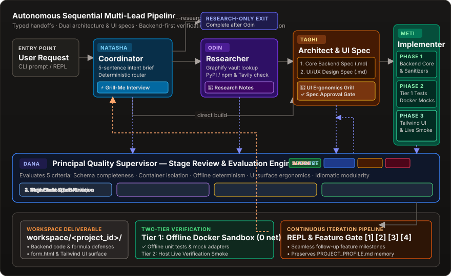
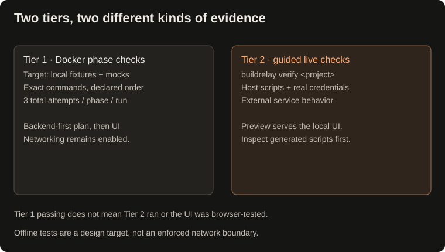

A Python CLI for AI development workflows
Plan. Build. Check.
Keep your progress.
Turn a development request into a technical plan, Docker-built code, and recorded phase checks—with saved stages you can resume.
How it works
BuildRelay coordinates a sequential, role-based engineering team overseen by Dana Quality Supervisor. Tasks flow from prompt alignment through research and dual specifications to container-isolated execution and live verification:

The 5-Lead Autonomous Engineering Team
Every lead operates with typed inputs, explicit contracts, and dedicated domain expertise:
- Produces typed task brief and 5-sentence intent alignment brief.
- Conducts interactive Grill-Me interviews (up to 10 questions) to clarify edge cases.
- Routes cleanly to research, design, or implementation.
- Traverses local Markdown vault knowledge graph via Graphify.
- Verifies external package registries (PyPI, npm) and Tavily search snippets.
- Tasks marked
--research-onlycomplete cleanly after Odin.
- Dual specifications:
spec.md(Backend) andui.md(UI/UX). - Conducts dedicated UI/UX Ergonomics Grill and presents unified proposal gate.
- Mandates offline Docker mocks and backend-first phased execution.
- Executes inside Docker container sandbox with zero host leakage.
- Verifies core backend logic and Tier 1 unit tests first.
- Constructs responsive Tailwind UI surfaces and Tier 2 live smoke scripts.
- Supervises intermediate deliverables across all stages against 5 core criteria.
- Advisory critique cards (
--dana) or autonomous lead steering (--supervise autonomous). - Persists structured audit notes under
vault/supervision/.
Two-Tier Verification Architecture
AI-generated code frequently breaks when external cloud dependencies or credentials fail. BuildRelay eliminates flakiness with a two-tier verification architecture: offline deterministic unit tests inside Docker (Tier 1) followed by guided live smoke verification on the host (Tier 2).

Start here
Before you run
You need Python 3.11+, Docker, and a configured model provider or compatible local endpoint. This is a local, single-user tool. Passing phase commands does not guarantee correctness; review the code and checks before relying on them.